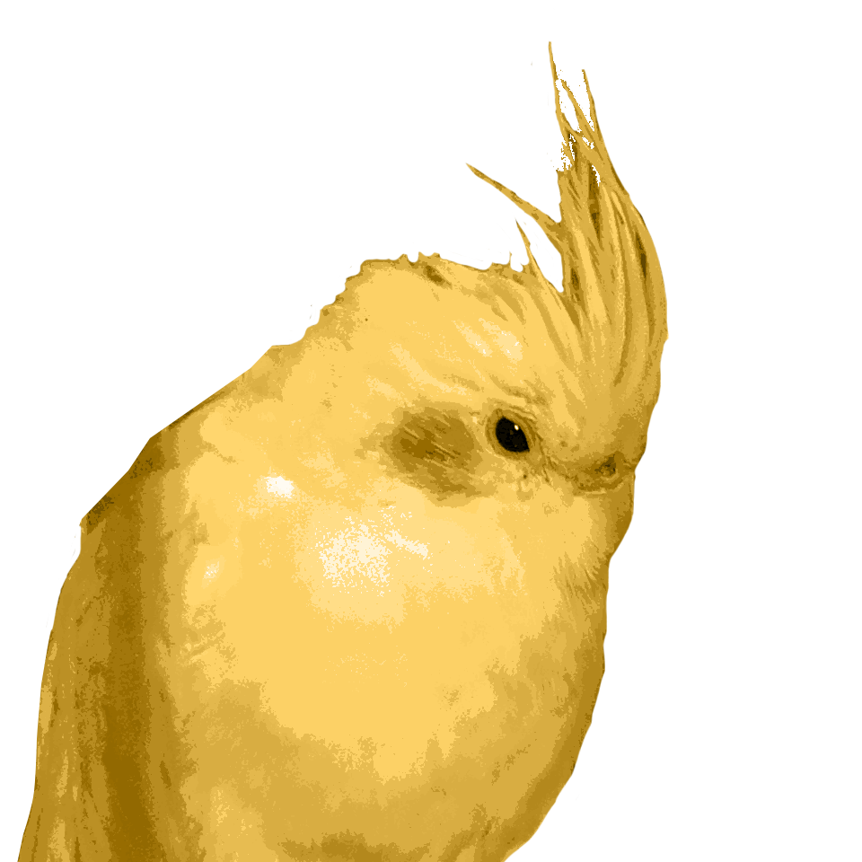
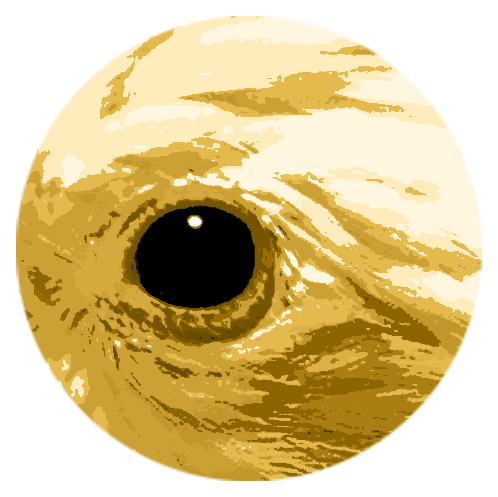

WHAT IF?
🐥🐥🐥
ENFP적 상상으로, 만약 당신에게 이런 문제가 주어진다면 어떻게 할 것인가?
당신은 어떤 사이트에 로그인을 하고자 한다.
그런데 로봇인지 아닌지 확인하기 위해 이러한 문제를 풀라고 제시받았다.
어떤가? 아마 주인이 아니라면 이 둘을 구별하기는 힘들 것이다.
‘그러면 로그인을 못하는데?’
일단, 이것이 정답이다.
‘이걸 어떻게 구분해!’
라고 생각하신 당신을 위해, 나만 알고있던 그 노하우를 친절히 공개하고자 한다.
🐥차이점1. 우관의 모양🐥
우관이란?-새의 머리에 길고 더부룩하게 난 털. 또는 그런 털을 가진 새.
이제부터 나오는 사진의 좌측은 ‘장군이’, 우측은 ‘행복이’다.
1. 머리모양


털을 부풀린걸 보았을 때, 장군이는 머리가 각졌다는 특징이 있다.
2. 곱슬과 직모

앞모습이나 옆모습을 보았을 때, 장군이는 머리털이 비교적 곧고 행복이는 꾸불꾸불 제멋대로 나있다는 특징이 있다.
3.눕힌 머리의 잔털


🐥차이점 2. 부리🐥
1. 크기차이

장군이가 행복이에비해 부리의 전체 크기가 작다.
🐥차이점3. 눈🐥
1. 눈 주변의 까만 부분

행복이에 비해 장군이는 비교적 눈과 코 사이 부분이 까맣다.
2. 눈매


장군이보다 행복이 눈매가 좀더 쳐졌고 반달 웃음을 잘 짓는다.
🐥🐥🐥
어떤가? 이제 당신은 장군이와 행복이 마스터가 되었다.
이제 당신은 로그인을 할 수 있다! 당신은 나에게 고마워해야 할 것이다.
이러한 상황이 언제 발생할지 모르니, 잘 기억하길 바란다.
그럼 이만!